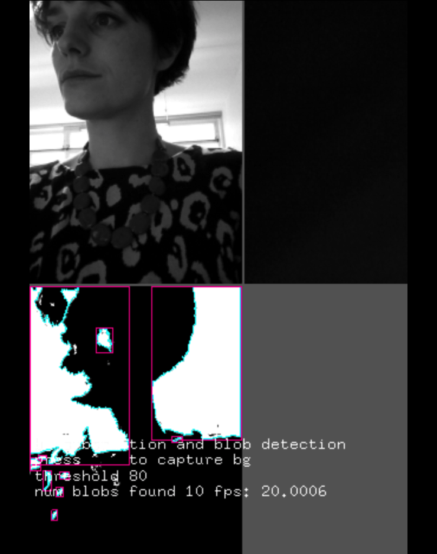

I am an artist-maker-educator based in Bristol, UK. I make things with hardware and software and glue and thread. I also design workshops to support people to make things with hardware and software and glue and thread. My work is geared around making futures through re-imagining how we can use or relate to technology, sometimes this is through making (do it yourself -DIY), often this is by working with other people (do it with others, do it together -DIWO, DIT).
I work in public spaces, often with third sector partners, and in the past few years I have been resident in a number of museums and arts spaces including Knowle West Media Centre in Bristol, Exploratorium in San Francisco, Somerset House in London, and Wired Lab in Tokyo. I co-run E-stitches Bristol, a monthly e-textile meetup based at the Pervasive Media Studio.
In 2018 I started an AHRC funded PhD at Goldsmiths, University of London, where I am collaborating with a number of arts spaces to explore alternative ways of learning about data. Read my CV to find out dates and other things in between.
Please get in touch for more info: hello@beccarose.co.uk. You can also find me on twitter @becca_rose_ and insta @becca.rose.glow